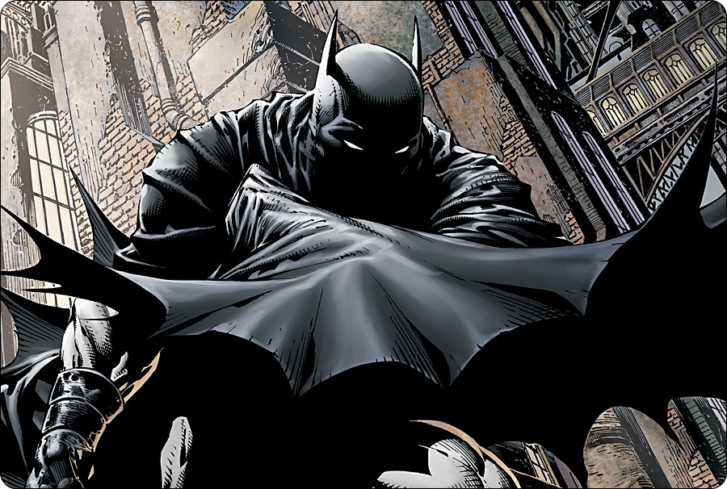
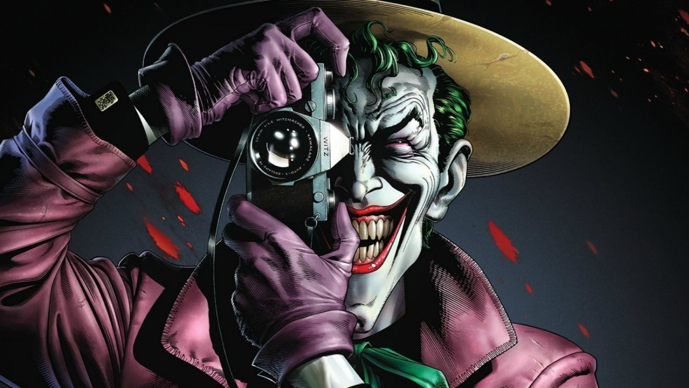
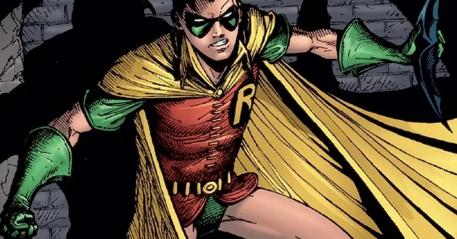

Batman

O Batman é um dos super-heróis mais famosos da DC Comics. Ele protege Gotham City sem ter superpoderes, usando inteligência, treinamento e tecnologia.
Alguns pontos:
- Foi criado por Bob Kane e Bill Finger e estreou em 1939, na revista Detective Comics #27
- Seu alter ego é Bruce Wayne, um bilionário que perdeu os pais ainda criança
- Enfrenta vilões como Coringa, Pinguim, Charada e Duas-Caras
Coringa

Coringa: o palhaço do crime, caótico e imprevisível, e o maior inimigo do Batman.
Sobre o Coringa:
- Estreou em 1940, na primeira edição da revista Batman
- Sua origem é incerta: em uma das versões, ele cai em uma cuba de produtos químicos
- Não tem superpoderes, mas é um gênio do crime e um mestre da manipulação
- Arlequina é sua parceira mais famosa
- Foi interpretado por Heath Ledger e Joaquin Phoenix, que ganharam o Oscar pelo papel
Robin

Robin: o jovem parceiro do Batman, ágil e corajoso, que ajuda a combater o crime em Gotham.
Sobre o Robin:
- Estreou em 1940, na revista Detective Comics #38
- O primeiro Robin foi Dick Grayson, um acrobata de circo adotado por Bruce Wayne
- Outros Robins: Jason Todd, Tim Drake e Damian Wayne
- Dick Grayson cresceu, deixou o manto e virou o herói Asa Noturna
- Lidera ou integra os Jovens Titãs